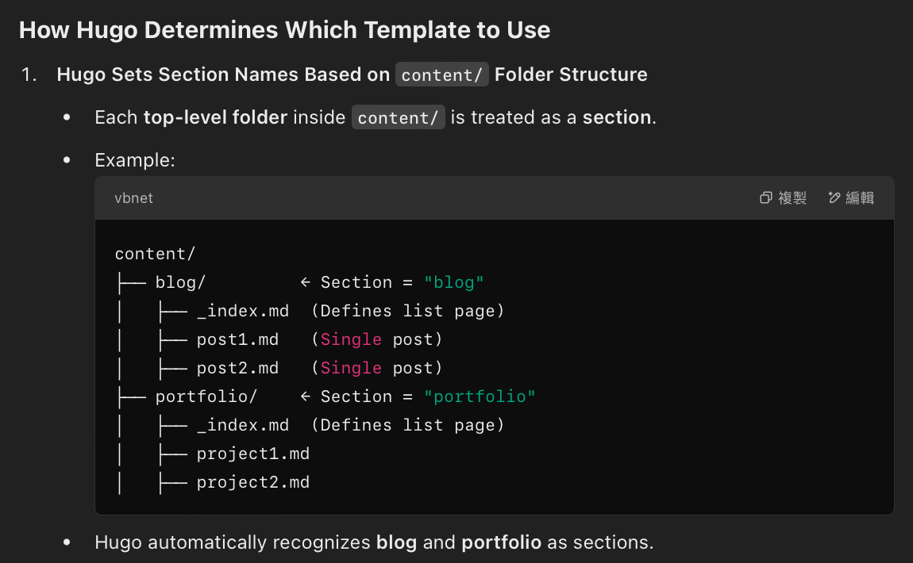
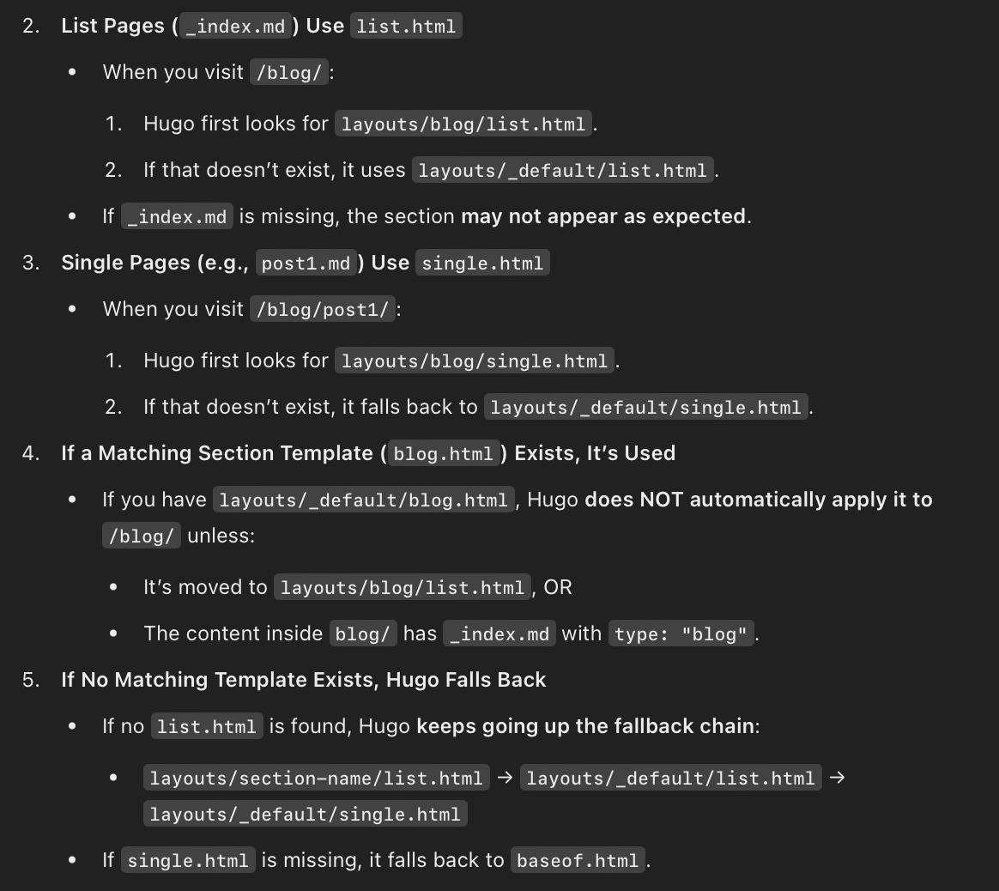

Stylesheet + Hugo w/ chatgpt
Stylesheet + Hugo w/ chatgpt
正如標題所述
如何將兩者做結合
動機
想做自己的blog並以靜態網頁的方式部署在github page上，Hugo因為社群大所以採用，但是Hugo themes裡面的設計我並不喜歡
我希望是有profile 結合 Blog的設計
基本Set up
follow hugo 官方 setup & 在stylesheet 上找到順眼的模板
理解hugo拆分
將stylesheet 全部hardcode的東西做拆分
並放在layouts下方
會重複運用的部分 -> header, footer 等 抓出來丟在 layouts/partials
主頁 layouts/index.html
其他基礎架構(這與hugo blog設計有關聯)丟在 layouts/_defaults
故你的baseof.html
<body id="top">
{{ partial "header.html" . }}
<main>
{{ block "main" . }}{{ end }}
</main>
{{ partial "footer.html" . }}
</body>
你就可以將重複利用的 header.html, footer.html 拆分出去
而main則可以依據需求去客製化
理解hugo重複套用template的邏輯
Hugo本質就是快速建置blog的架構
在content底下每一個folder(你可以想像成每一個主題) 會被視為一個section
你不需要為每一個主題全部從頭打造blog樣式
Hugo 會有一套底層邏輯去找尋對應的網頁模版
而這個網頁模版就是來自layouts底下做組合的
舉例 :
你想在blog中創一個project folder
content/first_project
並在裡面有與這個project有關的post
content/first_project/1_post.md, ontent/first_project/2_post.md, etc...
這些1_post.md, 2_post.md Hugo 會依據邏輯去找查合適的模板


所以你在layouts/_defaults 下的 baseof.html, list.html, single.html 是當你沒有特別指定template的時候hugo會自己去找的
但若是你對這個project的設計想要客製化的
你可以在layouts底下創一個與你project相同名稱的folder
並寫出客製化的baseof.html, list.html, single.html 在該folder下
善用loop
Hugo利用查找template的方式使你可以重複運用這些主題，大幅減少重複無意義的複製貼上
在首頁中，也會希望是動態更新
此時像stylesheet預設hardcoding的方式肯定不可行
善用hugo 內建的 Loop去查找對應的section, pages, etc... 並展示在index上
{{ range first 4 (where .Site.RegularPages "Section" "blog") }}
<p>{{ .Title }} - {{ .Summary }}</p>
{{ end }}
hugo就會查找 全部.Site.RegularPages 也就是所有hugo template會套給single.html的md file
之後因為 where這個判斷式
將single.html的md file 限縮在 content/blog這個section底下
最後range first 4 是我希望index 上只顯示 最新4個，只有點進blog 區才出現全部的blog post
而 <p>{{ .Title }} - {{ .Summary }}</p> 則是會lookup 每一個md file上面的header